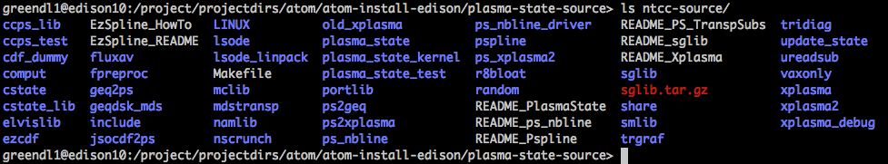

plasma-state build notes¶
http://w3.pppl.gov/ntcc/PlasmaState
Requires: pspline, TranspSubs, Xplasma, sglib (all these are in ntcc-source) There seem to be both t_ versions and regular versions. Looks like the t_ versions are related to SWIM, so we will use those. Be nice if someone documented what the difference was.
Looks like you simply put the contents of the downloaded source into the same directory and run the gmake command since all the top-level Makefiles are the same.

Edison GNU¶
module swap PrgEnv-intel PrgEnv-gnu
module swap gcc gcc/4.8.2 # This is because there is no netcdf built for gcc49
module load netcdf
cd /project/projectdirs/atom/atom-install-edison/plasma-state-source/ntcc-source
NTCC_DIR=/project/projectdirs/atom/atom-install-edison/plasma-state-source/ntcc-gnu
make realclean
FC="ftn" CC="cc" CXX="CC" FORTRAN_VARIANT="GCC" gmake NO_EDITLIBS=Y LAPACK="" BLAS=""
gmake install PREFIX=$NTCC_DIR
A lot of the test routines seem to fail building with the following error
/opt/cray/hdf5/1.8.13/GNU/48/lib/libhdf5.a(H5PL.o): In function `H5PL_load': H5PL.c:(.text+0x4ac): warning: Using 'dlopen' in statically linked applications requires at runtime the shared libraries from the glibc version used for linking
/usr/bin/ld: link errors found, deleting executable `../LINUX/test/update_state'
collect2: error: ld returned 1 exit status
gmake[1]: *** [../LINUX/test/update_state] Error 1
But it seems OK not to worry about that.